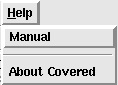

The help menu contains all of the documentation specifically related to the Covered report viewer GUI. For user documentation for the rest of the Covered tool, please see either the user documentation included with the Covered distribution (located in the doc/user directory) or see the Covered webpage located at http://covered.sourceforge.net/user/index.html. Additionally, information regarding the version of Covered used and other contact information for application problems, suggestions, etc. can be found in this menu.
Figure 1. The Help Menu
Selecting this menu item causes Covered to show the report viewer's user manual in a browser window.
Selecting this menu item causes Covered to bring up a window showing the current release number and contact information.